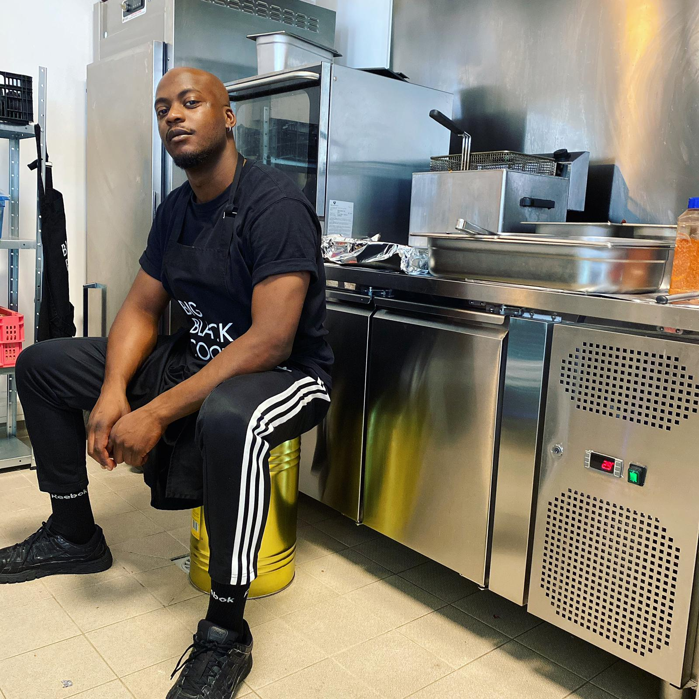

Qui se cache derrière Big Black Cook?
Wilfired ou Will quand on aura appris à se connaître (en général après deux ti-punchs).
J'ai 31 ans et je suis propriétaire de BBC.
Après avoir testé les planches des cours Florent, j'ai finalement opté pour les planches à découper et croyez
moi ça a été là une bien sage décision.
Du coup, je me suis essayé à pleins de choses: des pizzas aux baos en passant par les pastas... et franchement
c'était pas si mal!
En tout cas ça m'a fait réaliser que j'étais passionné par ce que je faisais.
Mais finalement rien ne valait la cuisine conviviale et généreuse de mon enfance. Ce fût une évidence pour moi
de me consacrer à celle-ci.
D'ailleurs merci Maman pour ton partage et d'être aussi inspirante.
Avec BBC, j'essaie de partager des saveurs caribeennes à travers des recettes plus modernes et accessibles
tout en gardant les racines de tout ces merveilleux plats que nous offre la cuisine antillaise.
Mon rêve serait d'ouvrir un restaurant Big Black Cook avec une belle et grande salle chaleureuse, remplie de
grandes tables colorés pleines de plats généreux à partager, que l'on trinque ensemble
dans une ambiance cool et décontracté où tout le monde se marre et prend du plaisir.
Une fois de plus je remercie ma maman pour tout ce qu'elle m'a transmis pour que je puisse vivre de ma
passion.
Je remercie mes frères et soeurs qui m'aident beaucoup et me poussent toujours à aller plus loin.
Je remercie mes amis qui m'ont toujours soutenus, encouragés et qui m'ont donné tellement de force et d'amour.
Je vous aime les copains.